Hace algunos ayeres,
pensé,
que necesitaba la fuerza de las esencias
para ser fuerte,
pensé,
que necesitaba de las deidades y de la gente
¿pero que pueden decir ellos?
¡si nunca han sentido hambre!
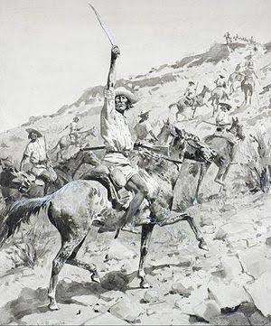
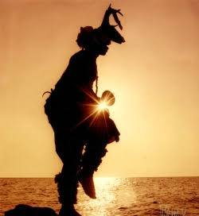
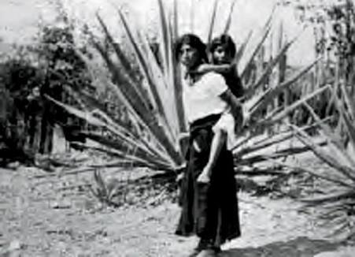
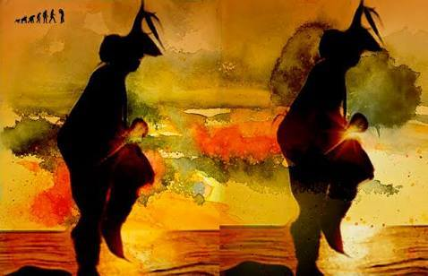
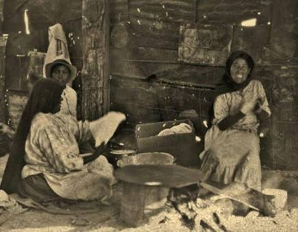
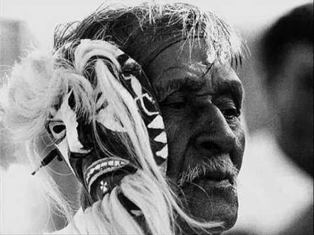
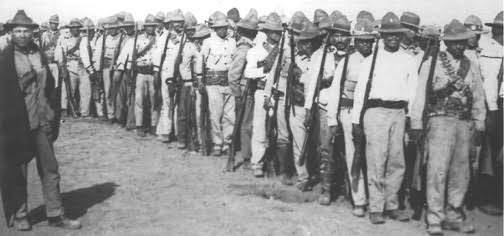
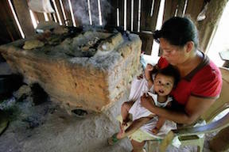
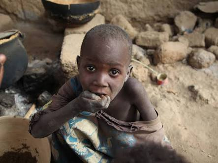
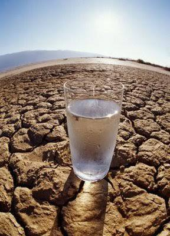
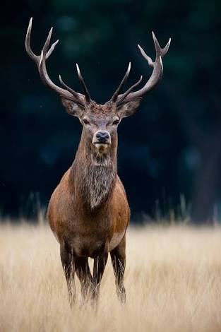
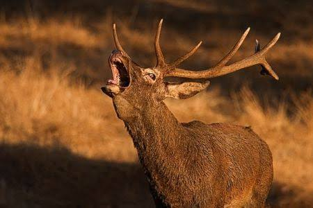
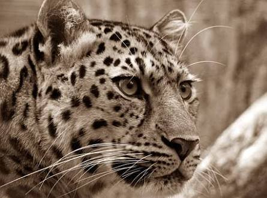
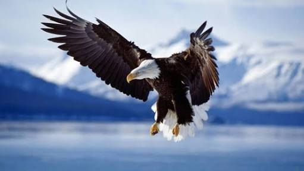
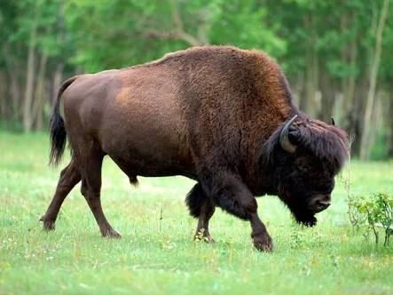
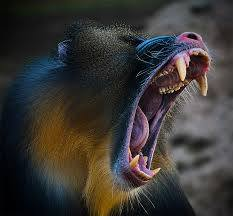
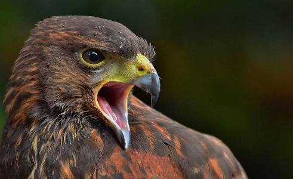
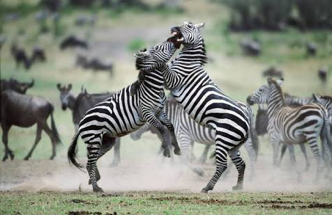
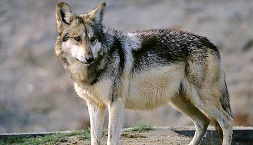
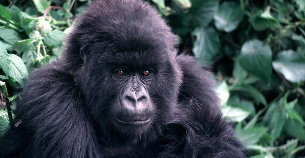
 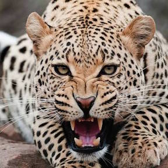
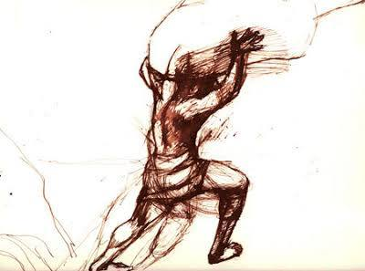
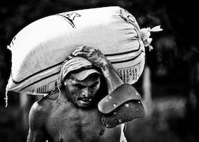
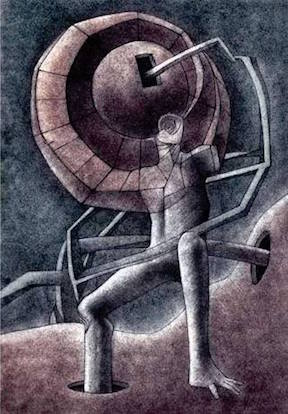
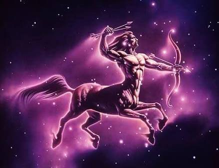
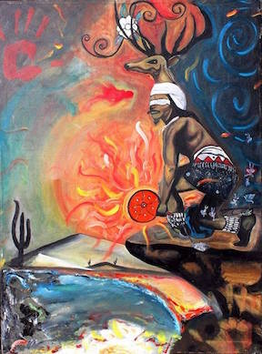
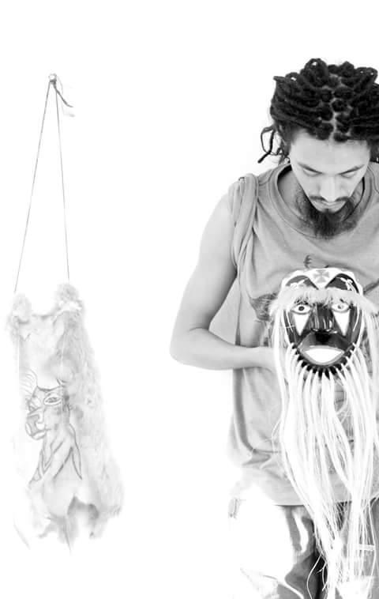
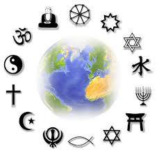
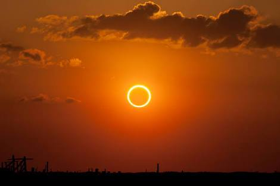
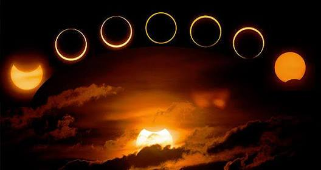
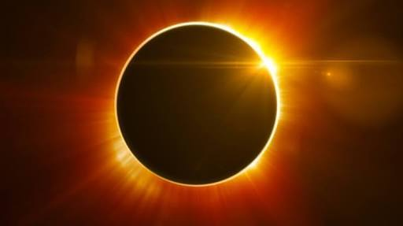
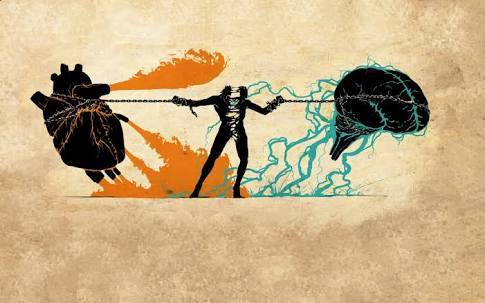
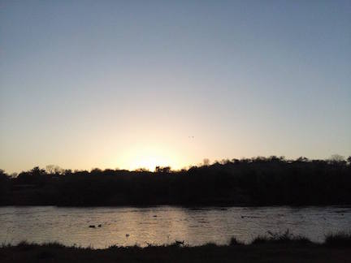
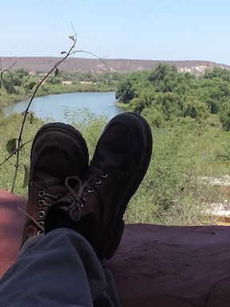
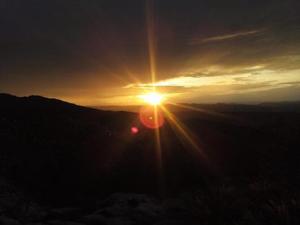
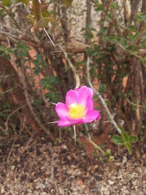
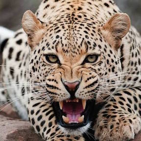
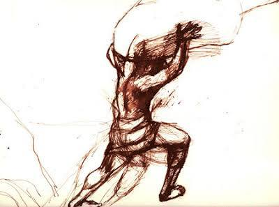
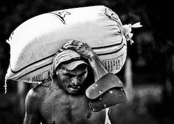
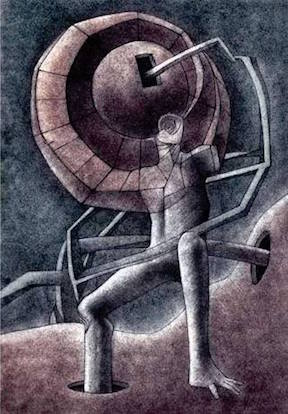
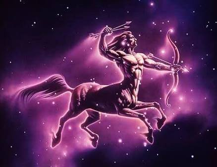
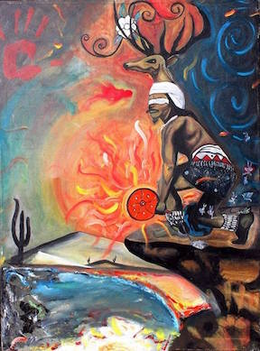
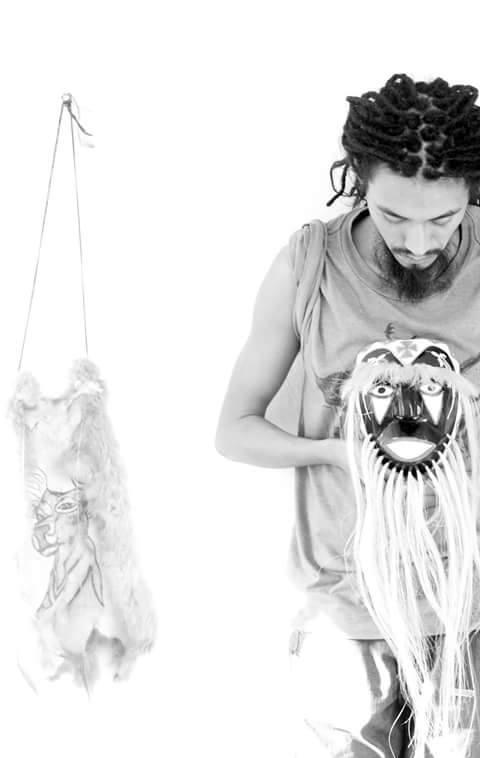
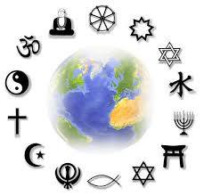
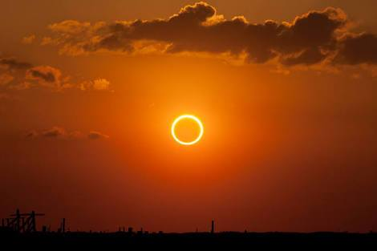
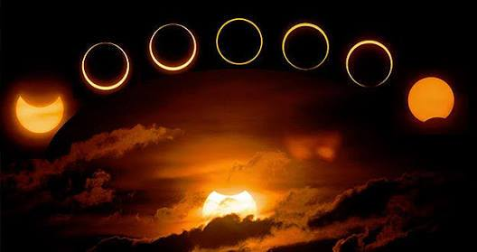
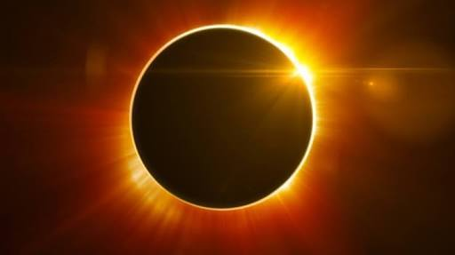
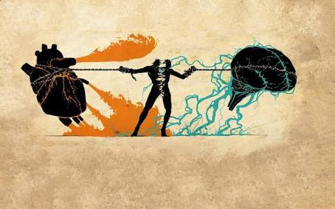
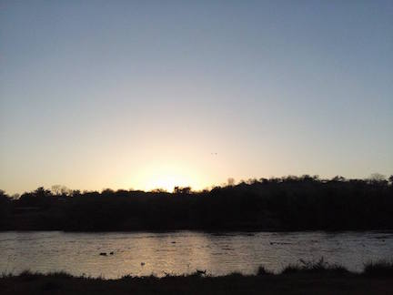
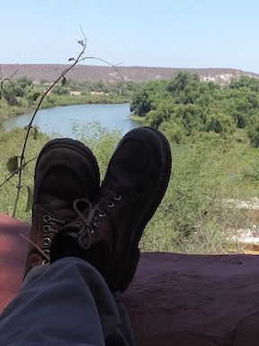
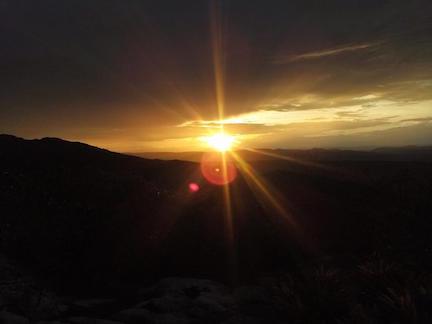
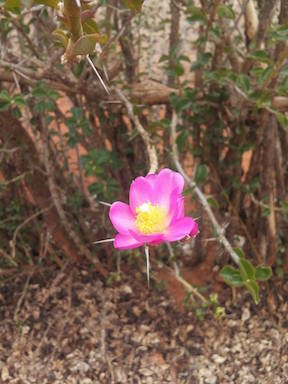